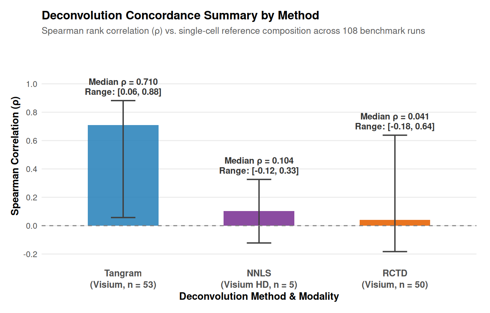
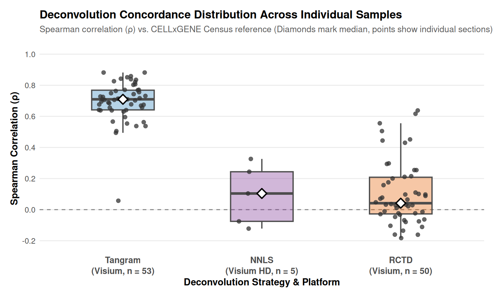

The single-cell lens is sharp, but it is panel-bound. The whole-transcriptome platforms, Visium (53 sections) and Visium HD (5 sections), trade resolution for coverage: they measure 15,000–19,000 genes across spots and bins. The cost is that a spot is not a cell but a mixture of several cells, and a bin is not a cell either. This chapter works with those measurements as they are: segmenting where the images allow, unmixing where they do not, and checking every step against the single-cell truth developed in the previous chapter.
I ran Cellpose whole-cell segmentation on the H&E images embedded in the samples. The first result is a plain statement about image resolution.
Visium HD recovers ~10,900 cells per section; standard Visium recovers only ~1,000. The difference is not the algorithm but the image: Visium hi-res images are ~2,000 pixels across a ~6.5 mm section (≈3 µm/pixel), at which a nucleus is 3–6 pixels and Cellpose’s minimum object size discards most of them. Visium HD images are ~1 µm/pixel and resolve cells properly.
The conclusion is that standard Visium images do not contain enough information to segment individual cells reliably. This is a property of the platform. The consequence is that Visium’s cell-type resolution must come from unmixing a mixture rather than segmenting cells.
The segmentation itself used the Cellpose whole-cell model on the H&E image, run on the GPU. Two practical notes from the run:
There is Cellpose API change (it expects a torch device object rather than a string) broke the first pass and I fixed it, and CPU execution was slow enough to be impractical, so the segmentation is gated to a GPU.
The image-resolution point above is the biological story; the tooling had to be made to work as well.
To recover cell types from spots, I deconvoluted each Visium section against a whole-transcriptome kidney single-cell reference: human and mouse kidney slices retrieved from the CELLxGENE Census, with the original-study cell-type labels harmonized to the nephron-module vocabulary used throughout this analysis. Two deconvolution methods were run per section and compared: RCTD (full mode, where spot UMI depth allowed) and Tangram (cluster-mode mapping of the reference onto the section), with per-spot NNLS against the cell-type profiles as the fallback. Visium HD, whose per-bin UMI is too low for RCTD and whose voxel count exceeds the GPU mapping budget, used NNLS. A third method, DestVI, was evaluated on pilot sections and produced valid proportions, but its per-section training cost made full-cohort application impractical, so the full-cohort benchmark reports RCTD and Tangram.
With no gold standard for spatial deconvolution, the concordance check below is the arbiter, and the strategy that matches this reference better is the one the data support; the section after the results discusses the two strategies directly.
The result separates the methods sharply, and the separation is the controlling variable of this chapter:


The concordance separates the methods sharply. Tangram, mapping the whole-transcriptome reference onto each section, reaches a median ρ = 0.71 across the 53 Visium sections (range 0.06 to 0.88): the unmixed spot composition reproduces the reference’s single-cell composition on nearly every section. RCTD, run in full mode against the same reference, reaches median ρ = 0.04 (range −0.18 to 0.64). The difference is a measured property of the two methods and of the reference itself: the Census slice is a balanced cross-study composition, and RCTD’s per-cell-type modeling is more sensitive to that mismatch than Tangram’s mapping is. The concordance check is what exposes it, and it is returned alongside the fractions rather than hidden.
The Visium HD bins, deconvoluted by NNLS, sit at median ρ = 0.10 (range −0.12 to 0.33), consistent with their low per-bin UMI and the NNLS fallback.
The lesson, stated once and applied everywhere, is that deconvolution is only as good as its reference, and the reference-matching problem is measurable. A pipeline that returns spot cell-type fractions without a concordance check returns numbers that cannot be trusted. This framework returns both the fractions and the check.
Spatial deconvolution has no consensus best method, and I do not think it should be treated as if it had one. RCTD and Tangram answer the same question, which cell types sit under each spot, but they answer it from different assumptions, and in the absence of a ground truth the defensible move is to run both, compare them, and let the data say which strategy matches this reference better. That is the error-trying stance I have taken throughout this analysis, and this chapter is where it is most visible.
RCTD, in full mode, is a statistical decomposition. It models each reference cell type as a distribution over genes, and for every spot it finds the mixture of cell types whose combined profiles best explain the observed spot expression, returning a weight per type. Its answer is only as good as how well each reference cell type’s profile matches the same cell type in the section. Tangram, in cluster mode, is a mapping rather than a mixture model: it aligns the reference’s cell-type composition onto the spatial units by matching expression across the whole section, and it returns a proportion per type per spot. Where RCTD asks how well this reference explains this spot, Tangram asks how the reference as a whole should be distributed across the section. The Python packages behind the two are rctd-py (the port of the R spacexr method) and tangram-sc.
The concordance check separates the two strategies sharply, and the separation is itself the finding. Tangram reproduces the reference’s single-cell composition with a median Spearman ρ of 0.71 across the 53 Visium sections; RCTD’s median is 0.04. I do not read that as one tool being broken. I read it as a measured property of the reference and of the two methods’ sensitivity to it. The Census slice is a balanced cross-study composition, and RCTD’s per-cell-type modeling is more sensitive to a reference whose composition differs from a given section than Tangram’s whole-distribution mapping is.
The consequence is practical. For the whole-transcriptome arms, Tangram is the workhorse, and RCTD’s sensitivity is reported alongside its output rather than hidden. For Visium HD, where per-bin UMI depth is too low for RCTD and the voxel count exceeds Tangram’s mapping budget, a per-spot non-negative least squares fit against the cell-type profiles covers the gap. In every case the fractions and the concordance check are returned together, so one sees the same audit I saw.
The principle underneath is one I would rather state than imply: deconvolution is only as good as its reference, the reference-matching problem is measurable, and that is why the framework measures it on every section rather than assuming it away.
Beyond unmixing, the spot and bin platforms contribute something the panels cannot: the whole-transcriptome context. It is on these sections that the spatially variable program of the kidney, including renin, podocyte, loop-of-Henle, and distal-tubule genes as well as the metabolic gradient of the cortex-to-medulla axis, becomes visible in full (described later). The single cells say what cells are present; the spots say what those cells’ neighbors are expressing at genome scale. The two lenses are complements, and this analysis keeps both.
The limit of this chapter is the one already stated: whole-transcriptome coverage buys context and discovery at the price of cell-type ambiguity, and the ambiguity is only resolvable when a matching reference exists. Two reference boundaries are worth naming. The Census kidney slices carry no S3-specific or injured-proximal-tubule labels, so reference-bound deconvolution cannot resolve those sub-states; the marker-based single-cell lens of earlier analysis is what recovers them. And the reference composition is a balanced cross-study slice, not a per-section ground truth, which is exactly why the concordance check is reported for every section rather than assumed.